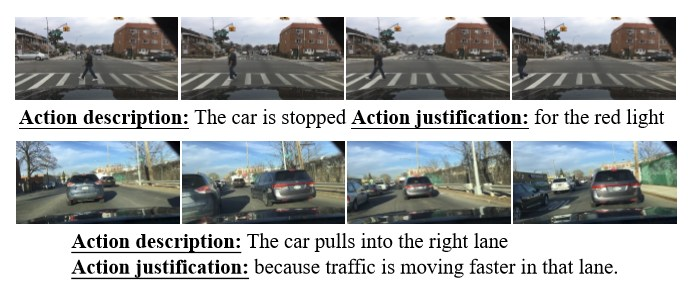
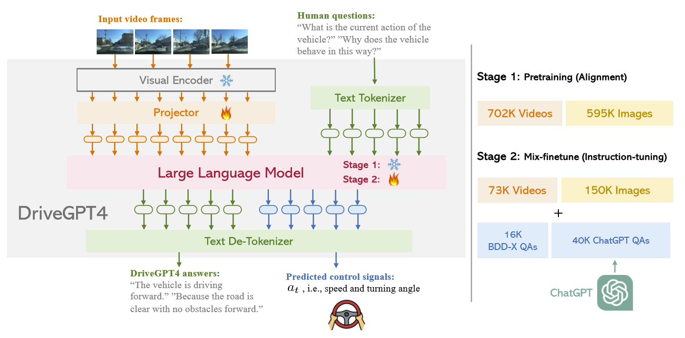
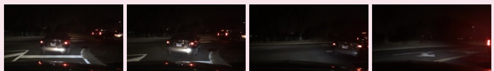
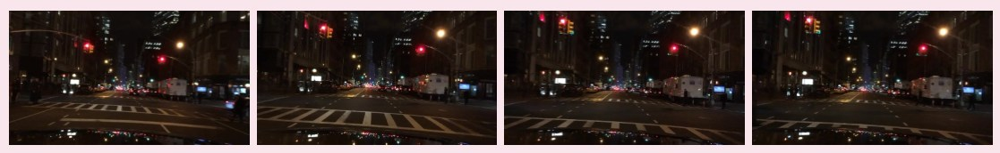
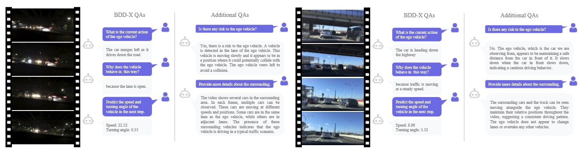
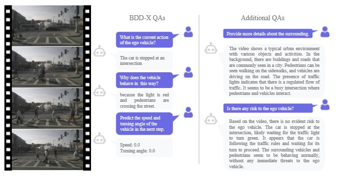
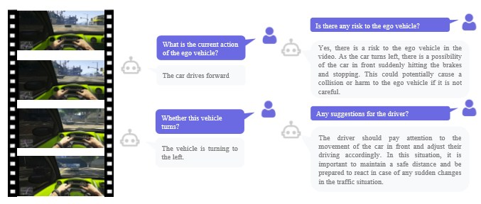
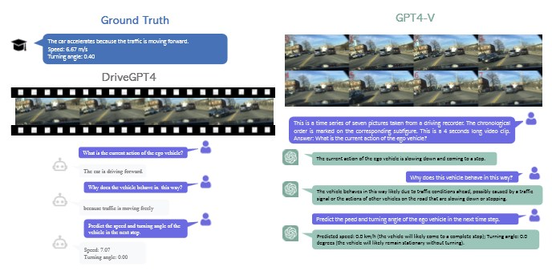

Zhenhua Xu、Yujia Zhang、Enze Xie*、Zhen Zhao、Yong Guo、Kwan-Yee K. Wong、Zhenguo Li、Hengshuang Zhao*
The University of Hong Kong、Zhejiang University、Huawei Noah's Ark Lab、University of Sydney
IEEE Robotics and Automation Letters（2024年7月採録、プレプリント版）、arXiv:2310.01412v5 [cs.CV]、2024年11月9日
翻訳について：原文 PDF は
47_DriveGPT4_2310.01412.pdf（全 8 ページ）。本文、図の説明、図中ラベル、表、脚注、付録を訳出し、論文タイトルと参考文献は原文のまま掲載。図は原図を掲載し、英語ラベルの日本語訳を併記した。数式・数値・引用番号・コードの識別子は原文を維持。原文の記述に関する補足は「訳注」と明示し、本文と区別している。
マルチモーダル大規模言語モデル（MLLM）は、画像や動画を含む非テキストデータを扱い推論する能力の高さから、研究コミュニティにおいて重要な関心領域として台頭している。本研究は、LLM に基づく新しい解釈可能なエンドツーエンド自動運転システム DriveGPT4 を導入することにより、MLLM の応用を自動運転の領域へと拡張することを目指す。DriveGPT4 は複数フレームの動画入力とテキストのクエリを処理でき、車両の行動の解釈を可能にし、適切な理由付けを提示し、ユーザから寄せられる多様な質問に効果的に応答する。さらに DriveGPT4 は、低レベルの車両制御信号をエンドツーエンドの方式で予測する。これらの高度な能力は、自動運転応用向けに特別に作成した独自の視覚指示チューニング（visual instruction tuning）データセットを、混合ファインチューニング（mix-finetuning）の学習戦略と組み合わせて用いることで実現される。DriveGPT4 は、解釈可能なエンドツーエンド自動運転ソリューションの開発に LLM を活用する先駆的な取り組みである。BDD-X データセットで行った評価により、DriveGPT4 の定性的・定量的に優れた性能が示される。加えて、ドメイン固有データでのファインチューニングにより、DriveGPT4 は自動運転のグラウンディングに関して GPT4-V と比べて同等、あるいはそれ以上の結果を得られる。本論文のウェブページは https://tonyxuqaq.github.io/projects/DriveGPT4 で公開されている。
過去 10 年間で、自動運転の分野は学術界と産業界の双方において目覚ましい成長を遂げてきた［1, 2］。商用の自動運転システムは、港湾、倉庫、市街地といった日常的なシナリオで実装に成功している。一般に自動運転車は、認識、計画、制御を含むモジュール型の設計を採用する。従来の自動運転システムでは、これらのモジュールはさまざまなシナリオに対処するための詳細なルールベース手法によって実装される。しかしこのようなシステムは、まれな事故のような未知のケースに遭遇すると機能しない可能性がある。
車両が知的な行動によって多様な状況に効果的に対処できるようにするため、データ駆動の学習ベース手法は現代の自動運転システムにおいて広く用いられる構成要素となっている［3, 4, 5, 6, 7］。システム全体をよりよく統合し最適化するため、一部の手法はネットワークをエンドツーエンドの方式で学習することを提案しており、これにより不連続な中間ステップが不要になる［8, 9, 10］。車載センサデータを入力として用いることで、エンドツーエンド自動運転システムは計画経路や低レベルの車両制御を直接予測できる。それにもかかわらず、エンドツーエンドの学習ベース自動運転システムはブラックボックスとして機能する。すなわち、人間は生成された判断を解釈したり理解したりできず、これが重大な倫理的・法的懸念につながり、商用自動運転システムの発展を制約している。
近年、説明可能な自動運転［11, 12, 13, 14, 15］は、ブラックボックスを解明しうる可能性から関心を集めている。これらの研究は、自動運転車のデータと言語のペアからなる大規模データセットを構築している。BERT［16］や GPT［17］といった言語モデルがこれらのデータセットで学習され、車載センサデータからの入力に基づいて自然言語を生成する。しかし、小規模な言語モデルの能力は限られており、これらのシステムの多くはあらかじめ定義された質問に対して硬直的な応答しか生成できない。加えて、小規模な言語モデルはモデル容量の不足に悩まされ、質問応答の性能も満足のいくものではない。
ChatGPT［18］や LLaMA［19］のような大規模言語モデル（LLM）の登場により、LLM が世界に関する広範な一般知識を備えていることから、自動運転システムの解釈可能性は改良されたテキスト予測の恩恵を受けうる。さらに LLM は、その本来的な推論能力により、低レベルの車両制御をよりよく分析し生成する潜在力を持つ。これを実現するには、LLM が画像や動画のようなマルチモーダルデータを理解する必要がある。マルチモーダル LLM は、コンピュータビジョン［20, 21］、身体性 AI（embodied AI）［22, 23］、生物医学［24, 25］など、さまざまな研究コミュニティからますます関心を集めている。これらの研究は、画像、音声、動画、制御などの空間からのマルチモーダル入力をテキスト領域へ射影することを提案しており、これにより LLM はこれらのマルチモーダルデータをテキストとして理解・処理できる。我々の知る限り、解釈可能なエンドツーエンド自動運転を目的として LLM をグラウンディングした既存の論文は存在しない。
本論文では、大規模言語モデルを利用した解釈可能なエンドツーエンド自動運転システムである DriveGPT4 を紹介する。システム名中の数字「4」は、MiniGPT4［26］と同様にマルチモーダル性を表す。DriveGPT4 は前方単眼 RGB カメラで撮影された動画シーケンスを入力として受け取り、次のステップの制御信号（すなわち車速と旋回角）を予測する。同時に、人間のユーザは DriveGPT4 と対話でき、DriveGPT4 は車両の行動を記述したりその挙動の背後にある理由を説明したりといった自然言語の応答を提供できる。DriveGPT4 が人間のように対話できるよう学習させるため、我々は LLaVA［27］に倣い、ChatGPT を用いて BDD-X データセット［28］に基づく視覚指示チューニングデータセットを作成する。本論文の貢献は以下のようにまとめられる。
脚注：原稿受付 2024年4月2日、改訂 2024年6月11日、採録 2024年7月9日。本論文は、アソシエイトエディタおよび査読者のコメントの評価を受け、エディタ Abhinav Valada により掲載が推薦された。本研究は中国国家自然科学基金（National Natural Science Foundation of China、No. 62201484）、HKU Startup Fund、HKU Seed Fund for Basic Research の支援を受けた。
Zhenhua Xu、Kwan-Yee K. Wong、Hengshuang Zhao は The University of Hong Kong に所属（email: zxubg@connect.ust.hk）。
Yujia Zhang は Zhejiang University に所属。
Enze Xie、Yong Guo、Zhenguo Li は Huawei Noah's Ark Lab に所属。
Zhen Zhao は University of Sydney に所属。
（責任著者：Enze Xie、Hengshuang Zhao）
デジタルオブジェクト識別子（DOI）：本ページ上部を参照。
エンドツーエンド自動運転。エンドツーエンド自動運転は、視覚入力に基づいて車両の経路と低レベル制御信号を直接予測することを目指す［29, 30, 8, 9, 10］。［31］は最初の深層学習によるエンドツーエンド自動運転研究と見なされている（訳注：参考文献［31］は ResNet の論文「Deep residual learning for image recognition」であり、記述内容（単眼画像から車両を制御する CNN）と合致しない。内容からは［29］（Bojarski et al.）を指すと考えられる。）。この研究では、著者らは単眼画像を入力として車両を制御する畳み込みニューラルネットワークを学習している。近年の研究は、モジュールの出力をトークン化することでシステムの全モジュールを統合し［9, 10］、より強力でロバストな制御効果を達成している。しかし、これらの研究は解釈可能性を欠いており、それが信頼性と商用化の可能性を制限している。
解釈可能な自動運転。学習ベースの自動運転におけるブラックボックスの問題に対処するため、一部の研究は可視化を用いている［32, 33, 34］。しかし、視覚的なマップは専門家でない乗客にとって理解が難しいことがある。別の方法として、言語モデルを用いて車両の状況を自然言語で記述する研究もあり、記述対象には車両の行動［11, 12, 14］、車両の行動の理由付け［14］、周囲の物体に関する記述［15］、自車両に対する潜在的リスクの議論［15］などがある。小規模な言語モデルの容量の限界に制約され、これらの手法はあらかじめ定義された人間の質問にしか対応できず、柔軟性のない回答しか提供できないため、現実世界のシナリオへの広範な応用が妨げられている。
マルチモーダル LLM。PaLM［35, 22］、LLaMA［19, 36］、Vicuna［37］といった強力な事前学習済み LLM の重みを基盤として、マルチモーダル LLM はテキスト以外の複数種類の入力を扱うことを目指す。Blip［21, 38］は Q-former を利用してマルチモーダル入力をテキスト空間へ射影する一方、他の研究［25, 39］は単純に全結合層を射影器（projector）として学習する。マルチモーダル LLM は、画像理解［38, 27］、動画理解［39, 40, 41, 26, 42］、医療診断［25, 24］、身体性 AI［35, 22, 43, 23］などのさまざまなタスクに広く応用されている。我々のタスクは動画理解と身体性 AI に密接に関連している。DriveGPT4 は、入力動画データの理解については前者から、制御信号の予測については後者から着想を得ている。これらの研究のうち、自動運転関連のタスクに焦点を当てたものはごく少数である［44, 45, 46］。DriveLikeHuman［44］は単純なシミュレーションシーンしか扱えず、現実世界への適用性が限られている。NuPrompt［45］は車両の認識のための物体追跡に焦点を当てているが、エンドツーエンド運転や車両行動の理由付けは考慮していない。DriveLM［46］は運転シーン理解のための大規模ベンチマークである。

図1：BDD-X のラベル付きデータの例。
図中ラベル：Action description＝行動の記述、Action justification＝行動の理由。上段「The car is stopped」＝車は停止している、「for the red light」＝赤信号のため。下段「The car pulls into the right lane」＝車は右車線に入る、「because traffic is moving faster in that lane.」＝その車線の流れの方が速いため。
本研究のタスクに適した公開データセットが乏しいため、本研究では BDD-X データセット［28］を用いる。動画とラベルはともに BDD-X データセットから取得した。このデータセットは約 20,000 サンプルを含み、学習用に指定された 16,803 クリップとテスト用の 2,123 クリップからなる。各クリップは 8 枚の画像に分割されている。BDD-X データセットは、車速や旋回角など、各フレームの制御信号データを提供する。また、図1に例示するように、各動画クリップについて車両の行動の記述と行動の理由を詳述するテキスト注釈も含む。
BDD-X の質問応答。BDD-X は各動画クリップについて 3 種類のラベル、すなわち車両の行動の記述、行動の理由、制御信号を提供する。LLM を学習するには、質問応答（QA）ペアが必要である。我々は同義の質問の集合を生成し、対応する BDD-X のラベルを回答として用いる。例えば車両の行動の記述については、「What is the current action of this vehicle?」（この車両の現在の行動は何か）と同等の質問を入力質問として LLM に送るべきである。そのうえで LLM は応答を生成すべきであり、その正解ラベルは車両の行動の記述である。BDD-X データセットには 3 種類のラベルがあることを考慮し、我々は 3 つの質問集合 \(Q_a\)、\(Q_j\)、\(Q_c\) を作成する。LLM が固定的な質問パターンに過学習するのを防ぐため、［27］に着想を得て、各質問集合は 1 つの質問に対する複数の同義表現を含むようにする。
ランダムに選ばれた質問 \(q_X \in Q_X\) と対応するラベルが QA ペアを形成し、データセットを構成する。LLM は車両の行動を同時に予測し解釈することを学習できる。しかしこれらの QA ペアは内容が固定的かつ硬直的である。多様性に欠けるため、これらの QA のみで学習すると LLM の能力が低下し、他の形式の質問に回答できなくなる。

図2：DriveGPT4 の概要。DriveGPT4 は、動画とテキストからなる入力を処理できる包括的なマルチモーダル言語モデルである。動画シーケンスは専用の動画トークナイザによってトークン化され、テキストと制御信号は共通のデトークナイザを共有する。DriveGPT4 は人間の問いかけに対する応答の生成と制御信号の予測を同時に行える。
図中ラベル：Input video frames＝入力動画フレーム、Visual Encoder＝視覚エンコーダ（雪の結晶＝重み固定）、Projector＝射影器（炎＝学習対象）、Human questions＝人間の質問（「What is the current action of the vehicle?」＝この車両の現在の行動は何か、「Why does the vehicle behave in this way?」＝この車両はなぜこのように振る舞うのか）、Text Tokenizer＝テキストトークナイザ、Large Language Model＝大規模言語モデル（Stage 1 では固定、Stage 2 では学習）、Text De-Tokenizer＝テキストデトークナイザ、DriveGPT4 answers＝DriveGPT4 の回答（「The vehicle is driving forward.」＝車両は前進している、「Because the road is clear with no obstacles forward.」＝前方に障害物がなく道路が空いているため）、Predicted control signals: \(a_t\), i.e., speed and turning angle＝予測された制御信号 \(a_t\)、すなわち速度と旋回角、Stage 1: Pretraining (Alignment)＝第 1 段階：事前学習（アライメント）、702K Videos＝70.2 万本の動画、595K Images＝59.5 万枚の画像、Stage 2: Mix-finetune (Instruction-tuning)＝第 2 段階：混合ファインチューニング（指示チューニング）、73K Videos＝7.3 万本の動画、150K Images＝15 万枚の画像、16K BDD-X QAs＝1.6 万件の BDD-X QA、40K ChatGPT QAs＝4 万件の ChatGPT 生成 QA
ChatGPT によって生成した追加の QA。先行研究において、ADAPT［14］は記述と理由を予測するキャプションネットワークを学習している。しかし、提供される記述と理由のラベルは固定的かつ硬直的である。人間のユーザが車両についてより多くを知りたいと考え日常的な質問をした場合、過去の研究では不十分な可能性がある。したがって、BDD-X だけでは解釈可能な自動運転の要件を満たすには不十分である。ChatGPT/GPT4 によって生成された指示チューニングデータは、自然言語処理［37］、画像理解［27］、動画理解［42, 40］における性能向上に有効であることが証明されている。ChatGPT/GPT4 は特権情報（例：画像にラベル付けされたキャプション、物体の正解バウンディングボックス）にアクセスでき、対話、記述、推論を生成するようプロンプトで指示される。現在のところ、自動運転向けに作成された視覚指示追従データセットは存在しない。そこで我々は、ChatGPT の支援を受けて BDD-X に基づく独自のデータセットを作成する。
前述の問題に対処するため、ChatGPT を教師として活用し、自車両に関するより多くの対話を生成する。プロンプトはおおむね LLaVA で用いられたプロンプト設計に従う。ChatGPT が動画を「見る」ことができるよう、YOLOv8［47］を用いて動画の各フレームでよく見られる物体（例：車両、歩行者）を検出する。得られたバウンディングボックスの座標は LLaVA に従って正規化され、特権情報として ChatGPT に送られる。物体検出の結果に加えて、動画クリップの正解の制御信号系列とキャプションも ChatGPT が参照できる。これらの特権情報に基づき、ChatGPT は自車両、信号機、旋回方向、車線変更、周囲の物体、物体間の空間的関係などについて、複数のラウンドと種類の対話を生成するようプロンプトで指示される。詳細なプロンプトは付録に示す。
最終的に、16K 件の BDD-X QA と ChatGPT によって生成された 40K 件の QA を含む、56K 件の動画–テキスト指示追従サンプルを収集する。例を表Iに示す。
DriveGPT4 は、動画やテキストを含むさまざまな入力タイプを扱える汎用的なマルチモーダル LLM である。動画は一様にサンプリングされて固定数の画像となり、Valley［39］に基づく動画トークナイザを用いて動画フレームをテキスト領域のトークンに変換する。生成されたすべてのトークンは連結されて LLM に入力される。本論文では、LLM として LLaMA2［36］を採用する。予測トークンが生成されると、デトークナイザがそれをデコードして人間の言語に復元する。RT-2［43］に着想を得て、テキストと制御信号は同じテキストデトークナイザを利用する。これは、制御信号を言語として解釈し LLM で効果的に処理できることを意味する。デコードされたテキストは、予測された信号を固定の書式で含む。DriveGPT4 のアーキテクチャの概要を図2に示す。
動画トークナイザ。入力動画フレームを \(V = [I_1, I_2, ..., I_N]\) とする。各動画フレーム \(I_i\) について、事前学習済みの CLIP 視覚エンコーダ［48］を用いてその特徴量 \(F_i \in \mathbb{R}^{257 \times d}\) を抽出する。\(F_i\) の第 1 チャネルは \(I_i\) の大域特徴を表し、残りの 256 チャネルは \(I_i\) のパッチ特徴に対応する。簡潔に表すため、\(I_i\) の大域特徴を \(F_i^G\)、\(I_i\) の局所パッチ特徴を \(F_i^P\) と表記する。

キャプション1：行動の記述
The car turns right（車は右折する）キャプション2：行動の理由
As the road is clear to turn.（道路が空いていて曲がれるため。）制御信号
速度（m/s）：3.91, 3.1, 2.35, 2.92, 3.51, 4.24, 4.85, 5.22
旋回角（度）：0.0, -3.08, -5.98, -4.66, -2.91, 1.97, 7.02, 14.46物体ボックス
Frame 0: car:[0.298, 0.408, 0.572, 0.756], car:[0.924, 0.408, 1.0, 0.51], car:[0.005, 0.83, 0.995, 0.982], car:[0.737, 0.373, 0.933, 0.522], car:[0.737, 0.373, 0.933, 0.522]
Frame 1: car:[0.327, 0.416, 0.623, 0.779], car:[0.004, 0.827, 0.99, 0.982], car:[0.961, 0.426, 1.0, 0.523], car:[0.76, 0.379, 0.966, 0.538]
Frame 2: car:[0.393, 0.427, 0.709, 0.777], car:[0.79, 0.387, 0.945, 0.553], car:[0.003, 0.825, 0.99, 0.98], car:[0.926, 0.434, 1.0, 0.549]
Frame 3: car:[0.518, 0.424, 0.849, 0.791], car:[0.834, 0.397, 0.994, 0.587], car:[0.007, 0.825, 0.983, 0.985]
Frame 4: car:[0.695, 0.542, 0.924, 0.777]
Frame 5:
Frame 6:
Frame 7:
BDD-X の QA
質問：What is the action of this vehicle?（この車両の行動は何か？）
回答：The car turns right.（車は右折する。）
質問：Why does this vehicle behave in this way?（この車両はなぜこのように振る舞うのか？）
回答：as the road is clear to turn.（道路が空いていて曲がれるため。）
質問：Predict the speed of the ego vehicle.（自車両の速度を予測せよ。）
回答：5.5.
質問：Predict the turning angle of the ego vehicle.（自車両の旋回角を予測せよ。）
回答：7.44.
ChatGPT によって生成された QA
質問：動画にはどのような物体が存在し、フレームを通じてそれらはどのように変化するか？
回答：動画にはさまざまな物体が映っている。動画が進むにつれて、これらの物体の位置と見え方が変化する。最初のフレームでは、複数の車が存在する。自車両が右折するにつれて、周囲の車は次第に視界から消えていく。
質問：自車両と交通および周囲環境との相互作用から何を学べるか？
回答：自車両と交通および周囲環境との相互作用は、安全運転の実践の重要性を示している。運転者は交通の中を進む間、適切な速度を維持し、他車両の位置など周囲に注意を払っている。右折する際には、加速する前に道路が空いていることを確認している。これらの行動は、運転者が環境を認識し、交通規則に従い、他の道路利用者と道路を共有する際に安全を優先する必要があることを強調している。
表I：指示チューニングデータのサンプル例。この図の上部は、動画キャプション、制御信号、および YOLOv8 によって得られた物体検出結果を含む、ChatGPT への入力情報を示す。下部は BDD-X の QA と ChatGPT によって生成された対話を示す。詳細なプロンプトは付録を参照。
（訳注：原表は動画フレームと文字情報からなる枠囲みのため、フレーム画像を掲載し文字部分を書き起こした。BDD-X の QA の英文は原文を併記し、物体ボックスの値は原文のまま。）

人間：車両の現在の速度：2.15m/s。この動画の長さは 2.10 秒である。この車両の現在の行動は何か？ アシスタント：The car slows down to a stop.（車は減速して停止する。）
人間：この車両はなぜこのように振る舞うのか？ アシスタント：since the light ahead became red.（前方の信号が赤になったため。）
人間：車両の速度を予測せよ。 アシスタント：2.09.
人間：車両の旋回角を予測せよ。 アシスタント：0.00.
表II：DriveGPT4 の予測例。この例では、簡潔に可視化するため 8 フレーム中 4 フレームを示している。
動画全体の時間的な視覚特徴は次のように表せる。
\[ T = F_0^G \oplus F_1^G \oplus ... \oplus F_N^G \tag{1} \]
ここで \(\oplus\) は連結を表す。動画全体の空間的な視覚特徴は次式で与えられる。
\[ S = \mathrm{Pooling}(F_0^P, F_1^P, ..., F_N^P) \tag{2} \]
ここで \(\mathrm{Pooling}(\cdot)\) は、メモリ効率のために \(N\) 個の特徴量を単一の特徴テンソルに変換するプーリング層を表す。最終的に、時間的特徴 \(T\) と空間的特徴 \(S\) の両方が射影器によってテキスト領域へ射影される。
テキストと制御信号。RT-2［43］に着想を得て、制御信号はテキストと同じドメイン空間に属するものとして、テキストと同様に処理される。制御信号は処理の過程でテキストの中に直接埋め込まれる。既定の LLaMA トークナイザを用いる。DriveGPT4 はマルチモーダルな入力データに基づいて次のステップの制御信号（すなわち \((v_{N+1}, \Delta_{N+1})\)）を予測する必要がある。自車両の速度と入力動画クリップの時間長はテキスト入力に含められる。旋回角は現在のフレームと前のフレームの間の相対角度を表す。予測トークンを得た後、LLaMA トークナイザを用いてトークンをテキストへデコードし戻す。予測された制御信号は固定の書式で出力テキストに埋め込まれ、容易に抽出できる。DriveGPT4 の入力と出力を示す例を表IIに示す。
これまでの LLM 関連研究と同様に、DriveGPT4 の学習は 2 つの段階からなる。（1）動画とテキストのアライメントに焦点を当てた事前学習段階、および（2）解釈可能なエンドツーエンド自動運転に関する質問に答えるよう LLM を学習することを目的とした混合ファインチューニング段階である。
事前学習。LLaVA［27］および Valley［39］に倣い、モデルは CC3M データセットの 593K 件の画像–テキストペアと、WebVid-2M データセット［49］の 703K 件の動画–テキストペアで事前学習される。事前学習の画像と動画はさまざまな話題を含み、自動運転応用向けに特別に設計されたものではない。この段階では、CLIP エンコーダと LLM の重みは固定されたままであり、射影器のみが学習される。
（訳注：本文の 593K 画像・703K 動画に対し、図2では 595K Images・702K Videos と記載されており、数値が一致しない。）
混合ファインチューニング。この段階では、DriveGPT4 の LLM が射影器とともに学習される。DriveGPT4 がドメイン知識を理解し処理できるよう、第3章で生成した 56K 件の動画–テキスト指示追従データで学習する。しかし 56K 件の自動運転ドメインのデータは LLM のファインチューニングには十分ではなく、DriveGPT4 は深刻なハルシネーションの問題（例：存在しない車両や信号機の検出）を抱える可能性がある。DriveGPT4 の視覚理解と質問応答の能力を高めるため、LLaVA と Valley によって生成された 223K 件の汎用指示追従データを混合ファインチューニングに利用し、ファインチューニング用データセットの規模を拡大する。「混合（Mix）」とは、汎用的な視覚理解データを我々のタスク固有の指示チューニングデータとともに学習に用いることを表す。その結果、DriveGPT4 は自動運転向けの 56K 件の動画–テキスト指示追従データと 223K 件の汎用指示追従データでファインチューニングされる。前者は DriveGPT4 を解釈可能なエンドツーエンド自動運転に適用できることを保証し、後者は DriveGPT4 のデータ多様性と視覚理解能力を高める。学習効率のため、DriveGPT4 はまず 223K 件の汎用データでファインチューニングされ、その後 56K 件のドメイン固有データでさらにファインチューニングされる。DriveGPT4 の推論能力をさらに向上させハルシネーションの問題に対処するため、今後は CARLA シミュレータに基づくより多くの指示チューニングデータを作成する予定である。
（訳注：図2では Stage 2 のデータとして 73K Videos と 150K Images（計 223K）が示されている。）
本論文において、DriveGPT4 は解釈可能なエンドツーエンド自動運転に焦点を当てる。動画フレームと人間の質問を入力として、手法には人間の言語による解釈と次のステップの制御信号を予測することが求められる。現在のところ、BDD-X データセットを除き、テキストによる解釈と制御信号の注釈を伴う車載カメラ撮影の動画クリップを提供する既存のデータセットはごく少数である。そのため、我々は主に BDD-X データセット上で評価実験を行う。BDD-X データセットは、制御信号とテキストによる理由付けが整合しないサンプルを除去するようフィルタリングされている。
| 分割 | シーン | 数 |
|---|---|---|
| Easy | 停止、前進走行、駐車など | 1202 |
| Medium | 車線変更、加速、交差点など | 295 |
| Hard | 車両の旋回、信号の変化など | 312 |
表III：テストセットの分割。
本節では、DriveGPT4 とそのベースラインを、車両の行動の記述、行動の理由、および車両の状態に関する追加の質問を含む解釈の生成について評価する。ADAPT［14］が最先端のベースラインとなる。近年のマルチモーダルな動画理解 LLM［40, 39］も比較対象として考慮する。すべての手法は 8 フレームの動画を入力として用いる。現在のところ、DriveGPT4 はメモリ消費の大きさと推論速度を考慮して、ADAPT のように 32 フレームの動画を入力とはしておらず、これは本研究の限界と見なしうる。
テストセットの分割。車両の走行中、シーンの分布は通常均衡していない。例えば、直進走行のような単純なシーンは、より難しい車両の旋回や車線変更よりも頻繁に見られる。包括的な評価比較のため、テストセットは走行シーンと車両の状態に基づいて「Easy」「Medium」「Hard」の各セットに分割される。分割の詳細を表IIIに示す。
評価指標。手法を徹底的に評価するため、NLP コミュニティで広く用いられている複数の指標、すなわち CIDEr［50］、BLEU4［51］、ROUGE-L［52］のスコアを報告する。BDD-X の QA タスクは書式が固定される傾向があるため、前述の NLP 指標で評価には十分である。一方、ChatGPT によって生成された QA は柔軟な書式とより複雑な意味内容を持つ。過去の MLLM 研究［27, 42, 39］に倣い、ChatGPT によって生成されたスコアも報告する。ChatGPT には 0 から 1 の間の数値スコアを付けるようプロンプトで指示し、スコアが高いほど予測精度が高いことを示す。ChatGPT ベースの評価の詳細なプロンプトは付録にある。ただし、ChatGPT のスコアは安定しないことに注意が必要であり、そのため参考として 3 回の評価の平均を報告する。
行動の記述と理由。目標は、車両の行動の記述と理由を、与えられたラベルにできるだけ近く予測することである。すべてのテスト分割の評価結果を表IVに示す。より詳細な結果は表Vに示す。結果から、DriveGPT4 はすべてのテストデータにおいて従来の SOTA ベースラインである ADAPT を上回り、特により難しい走行シーンと車両ダイナミクスを含む「Hard」分割で顕著であることが観察される。提案する DriveGPT4 の有効性と優位性が十分に示されている。
| 手法 | Easy | Medium | Hard | All | ||||||||
|---|---|---|---|---|---|---|---|---|---|---|---|---|
| CIDEr↑ | B4↑ | ROUGE↑ | CIDEr↑ | B4↑ | ROUGE↑ | CIDEr↑ | B4↑ | ROUGE↑ | CIDEr↑ | B4↑ | ROUGE↑ | |
| ADAPT | 100.93 | 20.90 | 46.17 | 62.66 | 16.44 | 40.80 | 52.71 | 13.56 | 40.49 | 85.38 | 17.40 | 43.04 |
| Video-LLaMA | 10.31 | 2.59 | 11.47 | 9.10 | 1.34 | 9.08 | 2.99 | 1.12 | 9.09 | 8.90 | 1.52 | 10.86 |
| Valley | 31.27 | 5.31 | 44.29 | 17.35 | 4.10 | 31.55 | 9.76 | 2.34 | 20.46 | 20.91 | 4.75 | 14.54 |
| DriveGPT4 | 113.20 | 20.38 | 46.46 | 65.01 | 16.94 | 40.51 | 57.29 | 12.28 | 42.07 | 99.10 | 18.32 | 44.73 |
表IV：BDD-X テストデータセットの各分割における比較実験の定量的結果。包括的なテキスト回答（すなわち記述と理由を組み合わせたもの）の評価結果を示す。「B4」は BLEU4 指標のスコアを表す。
| 手法 | 記述（Description） | 理由（Justification） | 全文（Full） | ||||||
|---|---|---|---|---|---|---|---|---|---|
| CIDEr↑ | B4↑ | ROUGE↑ | CIDEr↑ | B4↑ | ROUGE↑ | CIDEr↑ | B4↑ | ROUGE↑ | |
| ADAPT | 227.93 | 32.99 | 61.82 | 80.00 | 9.25 | 30.79 | 85.38 | 17.40 | 43.04 |
| DriveGPT4 | 256.03 | 35.41 | 63.77 | 98.71 | 10.02 | 31.52 | 99.10 | 18.32 | 44.73 |
表V：BDD-X テストデータセット全体における比較実験の定量的結果。行動の記述、行動の理由、および全文生成（すなわち、すなわち記述と理由を組み合わせたもの）の評価結果を示す。「B4」は BLEU4 を表す。（訳注：原文で「i.e., i.e.,」が重複している。）
| 手法 | 速度（m/s） | 旋回角（度） | ||||||||
|---|---|---|---|---|---|---|---|---|---|---|
| RMSE↓ | \(A_{0.1}\)↑ | \(A_{0.5}\)↑ | \(A_{1.0}\)↑ | \(A_{5.0}\)↑ | RMSE↓ | \(A_{0.1}\)↑ | \(A_{0.5}\)↑ | \(A_{1.0}\)↑ | \(A_{5.0}\)↑ | |
| ADAPT | 3.02 | 9.56 | 24.77 | 37.07 | 90.39 | 11.98 | 27.93 | 66.83 | 75.13 | 89.45 |
| DriveGPT4 | 1.30 | 30.09 | 60.88 | 79.92 | 98.44 | 8.98 | 59.23 | 72.89 | 79.59 | 95.32 |
表VI：BDD-X テストデータセット全体における制御信号予測の定量的結果。

図3：BDD-X テストセットにおける DriveGPT4 の QA。
図中ラベル：BDD-X QAs＝BDD-X の QA、Additional QAs＝追加の QA。
左の例 — BDD-X の QA：「What is the current action of the ego vehicle?」（自車両の現在の行動は何か？）→「The car merges left as it drives down the road」（車は道路を進みながら左へ合流する）／「Why does the vehicle behave in this way?」（この車両はなぜこのように振る舞うのか？）→「because the lane is open.」（車線が空いているため。）／「Predict the speed and turning angle of the vehicle in the next step.」（次のステップにおける車両の速度と旋回角を予測せよ。）→「Speed: 22.52 Turning angle: 0.35」（速度：22.52 旋回角：0.35）。追加の QA：「Is there any risk to the ego vehicle?」（自車両に何らかのリスクはあるか？）→「はい、自車両にはリスクがある。自車両の車線に車両が検出されている。この車両はゆっくり動いており、自車両と衝突する可能性のある位置にいるように見える。自車両は衝突を避けるために左へ進路を変えている。」／「Provide more details about the surrounding.」（周囲についてより詳しく述べよ。）→「動画には周囲にいる数台の車が映っている。各フレームで複数の車が観察できる。これらの車は異なる速度と位置で動いている。自車両と同じ車線にいる車もあれば、隣接車線にいる車もある。これらの周囲車両の存在は、自車両が典型的な交通シナリオの中を走行していることを示している。」
右の例 — BDD-X の QA：（自車両の現在の行動は何か？）→「The car is heading down the highway」（車は高速道路を進んでいる）／（この車両はなぜこのように振る舞うのか？）→「because traffic is moving at a steady speed.」（交通が一定の速度で流れているため。）／（次のステップにおける車両の速度と旋回角を予測せよ。）→「Speed: 8.96 Turning angle: 3.52」（速度：8.96 旋回角：3.52）。追加の QA：（自車両に何らかのリスクはあるか？）→「いいえ。我々が観察している車である自車両は、前方の車と安全な距離を保っているように見える。前方の車が減速すると自車両も減速しており、慎重な運転行動を示している。」／（周囲についてより詳しく述べよ。）→「周囲の車とトラックが自車両と並走しているのが見える。それらは動画全体を通じて相対的な位置を保っており、一貫した走行パターンを示唆している。自車両は車線変更や他の車両の追い越しを行っているようには見えない。」
| 手法 | CIDEr↑ | B4↑ | ROUGE↑ | ChatGPT↑ |
|---|---|---|---|---|
| ADAPT | - | - | - | - |
| Video-LLaMA | 5.71 | 2.94 | 10.20 | 27.75 |
| Valley | 11.37 | 5.01 | 11.09 | 43.23 |
| DriveGPT4 | 56.34 | 22.94 | 31.70 | 81.62 |
表VII：追加の質問応答に関する比較実験の定量的結果。モデルは ChatGPT によって生成された質問に回答する必要がある。「B4」は BLEU4 を表す。「-」は値が得られないことを示す。
追加の質問応答。上記の車両の行動の記述と理由は、比較的固定的な書式を持つ。DriveGPT の解釈能力と柔軟性をさらに評価するため、第3.1節に従って追加の質問を生成する。質問の生成には、BDD-X テストセットからランダムにサンプリングした 100 本の動画クリップを用いる。行動の記述や理由と比べて、これらの質問はより多様で柔軟である。評価結果を表VIIに示す。ADAPT は車両の行動の記述と理由以外の追加の質問には回答できない。従来の動画理解 LLM はこれらの質問に回答できるが、自動運転ドメインの知識を学習していない。すべてのベースラインと比べて、DriveGPT4 は優れた結果を示しており、その柔軟性が実証されている。
（訳注：原文はここで「DriveGPT」と表記しているが、DriveGPT4 を指すと考えられる。また「section III-A」は第3.1節に相当するが、追加の質問の生成手順自体は第3章の「ChatGPT によって生成した追加の QA」の項に記述されている。）
本節では、DriveGPT4 とそのベースラインを、オープンループの制御信号予測、特に速度と旋回角について評価する。すべての手法には次の時間ステップの制御信号を予測することが求められる。制御信号予測に関する先行研究に倣い、評価には二乗平均平方根誤差（RMSE）としきい値精度（\(A_\tau\)）を用いる。\(A_\tau\) は、予測誤差が \(\tau\) より小さいテストサンプルの割合を測る。包括的な比較のため、\(\tau\) を複数の値 \(\{0.1, 0.5, 1.0, 5.0\}\) に設定する。従来の最先端（SOTA）手法 ADAPT と DriveGPT4 の定量的結果を表VIに示す。DriveGPT4 は速度と旋回角の両方の予測で優れた結果を達成している。
| BQ | CQ | MF | BDD-X の質問 | ChatGPT の質問 | 速度 | 旋回角 | ||||||||
|---|---|---|---|---|---|---|---|---|---|---|---|---|---|---|
| CIDEr↑ | B4↑ | ROUGE↑ | CIDEr↑ | B4↑ | ChatGPT↑ | RMSE↓ | \(A_{0.1}\)↑ | \(A_{1.0}\)↑ | RMSE↓ | \(A_{0.1}\)↑ | \(A_{1.0}\)↑ | |||
| 20.91 | 4.75 | 14.54 | 11.37 | 5.01 | 43.23 | - | - | - | - | - | - | |||
| ✓ | ✓ | 95.75 | 18.25 | 44.03 | 9.96 | 2.54 | 31.03 | 1.69 | 22.82 | 77.91 | 9.97 | 55.97 | 76.11 | |
| ✓ | ✓ | 10.40 | 2.31 | 5.35 | 50.09 | 21.53 | 79.37 | - | - | - | - | - | - | |
| ✓ | ✓ | 76.51 | 11.09 | 40.93 | 17.24 | 10.50 | 77.37 | 4.67 | 17.15 | 44.82 | 14.80 | 21.19 | 70.02 | |
| ✓ | ✓ | ✓ | 99.10 | 18.32 | 44.73 | 56.34 | 22.94 | 81.62 | 1.30 | 30.09 | 79.92 | 8.98 | 59.23 | 79.59 |
表VIII：BDD-X データセットにおけるアブレーション研究の定量的結果。「BQ」「CQ」「MF」はそれぞれ BDD-X の QA、ChatGPT の QA、混合ファインチューニングを表す。「-」は値が得られないことを示す。

図4：NuScenes［53］における DriveGPT4 のゼロショット汎化。
図中ラベル：BDD-X QAs＝BDD-X の QA、Additional QAs＝追加の QA。BDD-X の QA：「What is the current action of the ego vehicle?」（自車両の現在の行動は何か？）→「The car is stopped at an intersection」（車は交差点で停止している）／「Why does the vehicle behave in this way?」（この車両はなぜこのように振る舞うのか？）→「because the light is red and pedestrians are crossing the street.」（信号が赤で歩行者が道路を横断しているため。）／「Predict the speed and turning angle of the vehicle in the next step.」（次のステップにおける車両の速度と旋回角を予測せよ。）→「Speed: 0.0 Turning angle: 0.0」（速度：0.0 旋回角：0.0）。追加の QA：「Provide more details about the surrounding.」（周囲についてより詳しく述べよ。）→「動画には、さまざまな物体や活動を伴う典型的な都市環境が映っている。背景には、都市でよく見られる建物や道路がある。歩道を歩く歩行者が見られ、道路上を車両が走行している。信号機の存在は、交通の流れが規制されていることを示している。歩行者と車両が行き交う混雑した交差点のようである。」／「Is there any risk to the ego vehicle?」（自車両に何らかのリスクはあるか？）→「動画に基づくと、自車両に明らかなリスクはない。車は交差点で停止しており、おそらく信号が青に変わるのを待っている。車は交通規則に従い、進む順番を待っているように見える。周囲の車両と歩行者は正常に振る舞っているようで、自車両に対する差し迫った脅威はない。」

図5：ビデオゲームにおける DriveGPT4 のゼロショット汎化。
図中ラベル：「What is the current action of the ego vehicle?」（自車両の現在の行動は何か？）→「The car drives forward」（車は前進している）／「Whether this vehicle turns?」（この車両は旋回しているか？）→「The vehicle is turning to the left.」（車両は左に旋回している。）／「Is there any risk to the ego vehicle?」（自車両に何らかのリスクはあるか？）→「はい、動画の自車両にはリスクがある。車が左折する際、前方の車が急にブレーキをかけて停止する可能性がある。注意しなければ、これが自車両との衝突や損傷を引き起こす可能性がある。」／「Any suggestions for the driver?」（運転者への助言はあるか？）→「運転者は前方の車の動きに注意を払い、それに応じて運転を調整すべきである。この状況では、安全な距離を保ち、交通状況の急な変化に対応できるよう備えておくことが重要である。」

図6：DriveGPT4 と GPT4-V の比較。比較の前に、GPT4-V には BDD-X の QA ペアをプロンプトとして与えている。
図中ラベル：Ground Truth＝正解：「The car accelerates because the traffic is moving forward.」（交通が前に進んでいるため車は加速する。）Speed: 6.67 m/s Turning angle: 0.40（速度：6.67 m/s 旋回角：0.40）。
DriveGPT4：（自車両の現在の行動は何か？）→「The car is driving forward.」（車は前進している。）／（この車両はなぜこのように振る舞うのか？）→「because traffic is moving freely」（交通が円滑に流れているため）／（次のステップにおける車両の速度と旋回角を予測せよ。）→「Speed: 7.07 Turning angle: 0.00」。
GPT4-V：入力「これはドライブレコーダーで撮影された 7 枚の写真の時系列である。時間順は対応するサブ図に記されている。これは 4 秒間の動画クリップである。回答せよ：自車両の現在の行動は何か？」→「自車両の現在の行動は、減速して停止しつつあるところである。」／「この車両はなぜこのように振る舞うのか？」→「この車両がこのように振る舞うのは、おそらく前方の交通状況によるもので、信号機、あるいは減速または停止している道路上の他車両の行動が原因である可能性がある。」／「次の時間ステップにおける自車両の速度と旋回角を予測せよ。」→「予測速度：0.0 km/h（車両は完全に停止する可能性が高い）。旋回角：0.0 度（車両は旋回せず停止したままである可能性が高い）。」
直感的な比較のため、複数の定性的結果を示す。簡潔に可視化するため、入力動画クリップのうち 4 フレームのみを示す。まず、BDD-X テストセットの例を図3に可視化する。DriveGPT4 はプロンプトに基づいて高品質なテキストと制御の予測を生成できる。次に、DriveGPT4 の汎化能力を検証するため、図4では DriveGPT4 を NuScenes データセット［53］に適用してゼロショットの QA を行う。さらに汎化能力を試すため、ビデオゲームでも DriveGPT4 を試す。例を図5に示す。
GPT4-V。GPT4 のマルチモーダル版として、GPT4-V は単一フレームの画像を理解し推論でき、さまざまな日常タスクに対する優れた汎化能力を示している。しかし GPT4-V は依然として画像向けの汎用モデルであり、自動運転応用のグラウンディングのために特別にファインチューニングされてはいない。比較の前に、GPT4-V にはあらかじめいくつかの BDD-X の QA ペアをプロンプトとして与える。定性的評価の中で、GPT4-V は強力な認識・推論能力を示すものの、（1）数値的な制御信号を予測できない、（2）いくつかの車両の行動、特に動的な行動（例：旋回、加速など）を正しく理解できない、ことが観察される。例を図6に示す。さらなる例は付録にある。
（訳注：本 PDF（全 8 ページ）には付録が含まれていない。本文中で付録に記載とされる詳細プロンプトや追加例は本訳文にも含まれない。）
本論文では、提案した設計を検証するためにいくつかのアブレーション研究を行い、その結果を表VIIIに示す。ファインチューニングの際に BDD-X の QA または ChatGPT の QA のいずれかを除くと、対応する性能の低下が観察され、タスク固有のマルチモーダルデータをすべて含めることの重要性が浮き彫りになる。ChatGPT によって生成された QA ペアにより、DriveGPT4 は人間の質問により柔軟なパターンで回答でき、BDD-X の質問に対する QA 能力も向上する。次に、汎用の画像・動画指示追従データを除くことで、混合ファインチューニング戦略を用いない DriveGPT4 を試験する。深刻な性能低下が観察され、多様なマルチモーダルデータで DriveGPT4 をファインチューニングする必要性が示される。したがって、DriveGPT4 へのこれらの変更は、解釈可能なエンドツーエンド自動運転のための汎用的な QA 能力に悪影響を及ぼす。
本論文は、マルチモーダル LLM を用いた解釈可能なエンドツーエンド自動運転システムである DriveGPT4 を提示する。ChatGPT の支援を受けて自動運転の解釈のための新しいデータセットを構築し、DriveGPT4 の混合ファインチューニングに用いることで、車両に関する人間の問いかけに応答できるようにした。DriveGPT4 は入力動画とテキストを利用して、質問に対するテキストの応答を生成し、車両操作のための制御信号を予測する。DriveGPT4 は、車両の行動の記述、行動の理由、一般的な質問応答、制御信号予測といったさまざまなタスクでベースラインモデルを上回る。さらに DriveGPT4 は、ゼロショット適応による汎化能力を示す。今後、DriveGPT4 はクローズドループの車両制御タスク向けにさらに強化される予定である。模倣学習のドリフト問題に対処するため、人手を介さずにデータ収集を行う LLM エキスパートを開発する予定である。
参考文献は原文のまま掲載した。